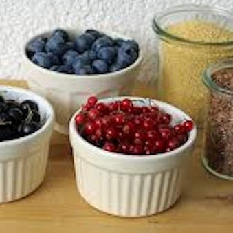
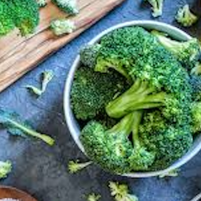
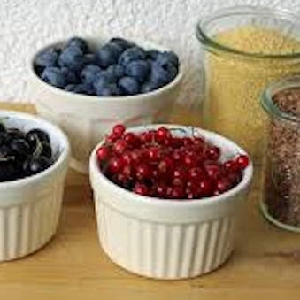
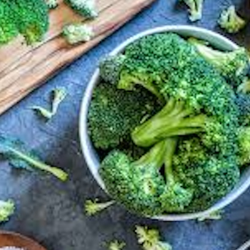

What types of superfoods are currently known?
To date, there is no exact definition of the term “superfood”. As a rule, however, superfoods are natural foods that contain a particularly large number of valuable nutrients (high nutrient density). These natural products often contain a large number of vitamins, minerals, trace elements, special enzymes, antioxidants, essential fatty acids (e.g. omega-3 fatty acids) or secondary plant substances that are necessary and important for our body as well as being health-promoting and/or performance-enhancing.
Some of the best-known superfoods are avocados, chia seeds, hemp seeds, goji-berries, acai-berries, elder-berries, garnet apple, barley grass, wheat grass, maca, cocoa, quinoa, algae (e.g. chlorella or spirulina), spinach, broccoli, kale, tomatoes, salmon, natural yogurt, kefir, turmeric, ginger, garlic, cinnamon, chili, nuts (e.g. walnuts) and dark chocolate. But there are many other natural foods that can be counted as superfoods. Below are a few pictures showing superfood types in a typical and detailed way.
 


